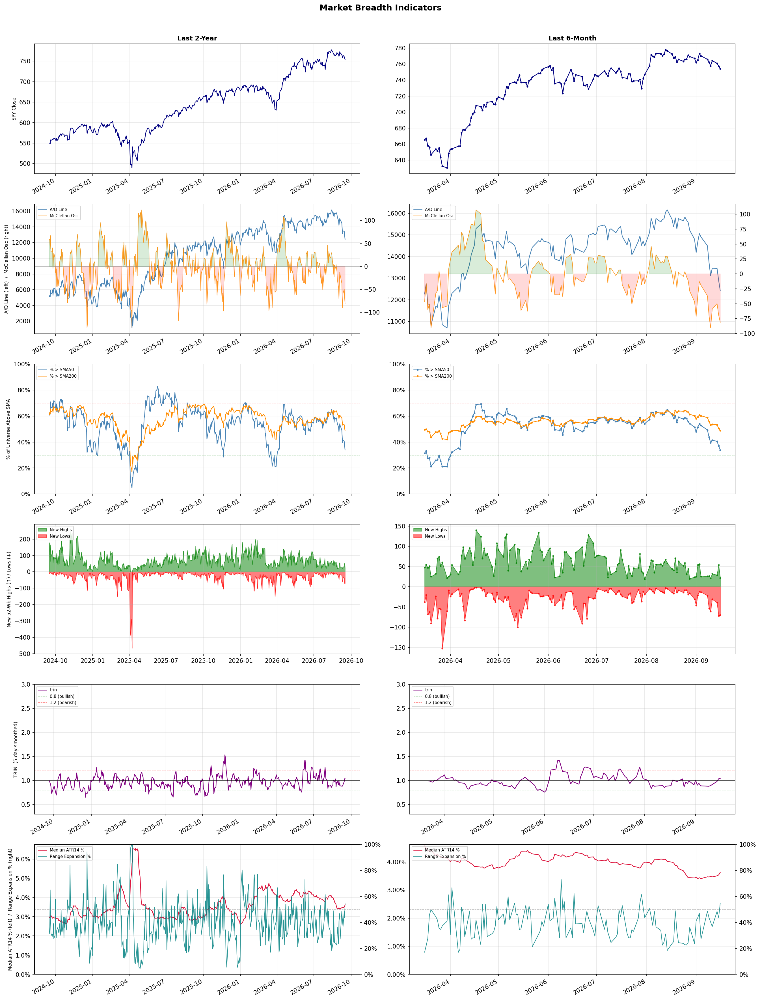

A daily market breadth and sector rotation report for active investors
| Item | Read |
|---|---|
| Regime | Defensive |
| Risk posture | Defensive |
| Universe | 1,325 stocks tracked · 22 new 52-week highs · 30 active swing setups |
| Breadth | only 33.8% of tracked stocks are above SMA50, new lows exceed new highs (70 vs 22), McClellan oscillator (breadth momentum) is negative at -81.1 |
| Leadership | Diagnostics & Research, Oil & Gas Refining & Marketing, and Health Information Services |
| Weakest groups | Footwear & Accessories, Solar, and Chemicals |
Use this report to prioritize research and chart review; validate entries, stops, liquidity, earnings, and risk before acting.
| Item | Read |
|---|---|
| Primary read | Defensive regime with Defensive risk posture. |
| Research queue | WGS, NEO, TWST, RVTY, ILMN |
| Leadership focus | Diagnostics & Research, Oil & Gas Refining & Marketing, and Health Information Services |
| Caution list | Footwear & Accessories, Solar, and Chemicals |
| Review prompt | Check extension risk, chart location, fundamentals, valuation, and earnings before using any research row. |
| Item | Read |
|---|---|
| Primary read | 4 active risk warnings; use screen output as watchlist input only. |
| Bullish screens | ILMN, NEO, RVTY, DINO, MPC |
| Bearish screens | CLX, AON, BUR, LAZ, PWP |
| Alerts / levels | Automated trigger, stop, ATR, liquidity, reward/risk, and event-risk levels are pending future enrichment. |
| Review prompt | Open the linked chart, define trigger and invalidation, then check liquidity and event risk independently. |
Risk Posture: Defensive — screen backdrop favors caution; require independent risk review before new exposure
Metric context: McClellan below -50 = elevated selling pressure; below -100 = washout territory. Range Expansion = share of stocks with daily range above their 20-day average. Signal Density = share of tracked names appearing in signal screens.
| Breadth Date | % > SMA50 | % > SMA200 | New Highs | New Lows | McClellan | Median Range | Avg Range | Median ATR14 | Range Expansion | Signal Density |
|---|---|---|---|---|---|---|---|---|---|---|
| 2026-09-16 | 33.8% | 48.7% | 22 | 70 | -81.1 | 3.4% | 3.9% | 3.6% | 55.0% | 12.0% |

Prior comparison date: September 15, 2026
| Metric | Prior | Current | Change |
|---|---|---|---|
| Regime | Defensive | Defensive | unchanged |
| Risk Posture | Defensive | Defensive | unchanged |
| % > SMA50 | 37.1% | 33.8% | -3.2 pts |
| % > SMA200 | 50.5% | 48.7% | -1.8 pts |
| New Highs | 54 | 22 | -32 |
| New Lows | 74 | 70 | +4 |
Top-10 industries entering: Software - Infrastructure. Top-10 industries leaving: Oil & Gas Midstream. New multi-signal long setups: AVTR, CMBT, DINO. New multi-signal short setups: ALHC, AON, BIDU, BILI, BUR, CLX, CWH.
| Status | Tickers | Read |
|---|---|---|
| Added | ALHC, AON, AVTR, BIDU, BILI, BUR, CLX, CMBT | New technical screen matches vs prior report. |
| Removed | APA, CNQ, CRBG, CRWD, CVE, DBX, DXYZ, EOG | No longer present in today's technical screen matches. |
| Still Active | ARDX, DT, IONS, NEO, PWP, RARE, RVTY, SDGR | Appeared in both current and prior reports. |
| Promoted | none | Model Screen Score improved by at least 15 points. |
| Downgraded | none | Model Screen Score declined by at least 15 points. |
| Direction | Industry | ETF | Prior Rank | Current Rank | Days | Rank Change |
|---|---|---|---|---|---|---|
| Rose | Agricultural Inputs | N/A | 84 | 8 | 35 | +76 |
| Rose | Oil & Gas E&P | XOP | 72 | 10 | 42 | +62 |
| Rose | Grocery Stores | N/A | 83 | 24 | 42 | +59 |
| Rose | Gambling | N/A | 84 | 33 | 42 | +51 |
| Rose | Capital Markets | KCE | 75 | 25 | 35 | +50 |
Bull: The Agricultural Inputs sector is likely experiencing a rise in relative strength due to increasing demand for agricultural products driven by favorable market conditions and macroeconomic factors, as highlighted in recent headlines. The mention of "Best Agriculture Stocks to Buy in 2026" and "7 Agricultural Stocks and ETFs to Buy and Hold" indicates a strong bullish sentiment and investor confidence in the sector's growth potential. Additionally, the reference to navigating a "rare ‘Super El Niño’" suggests that weather patterns are becoming more favorable for crop yields, further enhancing the outlook for agricultural inputs like fertilizers and chemicals, which are crucial for maximizing production efficiency.
Bear: While the bullish sentiment surrounding the Agricultural Inputs sector is palpable, it overlooks significant headwinds that could undermine growth. Rising input costs, particularly for energy and raw materials, could squeeze margins for agricultural producers, potentially leading to reduced demand for fertilizers and chemicals. Additionally, the anticipated "Super El Niño" may bring unpredictable weather patterns that could disrupt crop yields, counteracting any short-term gains and creating uncertainty in the market.
Verdict: The Agricultural Inputs sector is poised for growth due to increasing demand for agricultural products fueled by favorable market conditions and improved weather patterns, particularly with the anticipated "Super El Niño" potentially enhancing crop yields. However, investors should remain cautious of rising input costs and the risk of unpredictable weather disrupting production, which could negatively impact margins and demand for agricultural inputs. It's advisable to closely monitor these cost dynamics and weather developments when considering investments in this sector.
Sources: Google News
Bull: The Oil & Gas Exploration and Production (E&P) sector is experiencing rising relative strength primarily due to a combination of bullish oil price forecasts and sector-specific momentum. Goldman Sachs' prediction of oil reaching $120 per barrel signals strong demand and potential supply constraints, which is likely driving investor interest in the sector, as evidenced by the Energy ETF (XOP) hitting a new 52-week high. Additionally, the recent rally in stocks like Crescent Energy suggests that market sentiment is shifting positively towards E&P companies, despite short-term volatility in crude prices.
Bear: While the recent surge in the Energy ETF (XOP) and bullish forecasts from Goldman Sachs may suggest a strong outlook for the oil and gas sector, underlying economic concerns, such as persistent inflation fears and potential recession risks, could severely dampen demand for oil. Additionally, the recent decline in major producers like EOG Resources and ConocoPhillips indicates that market sentiment may be more fragile than it appears, as investors react to the volatility in crude prices rather than a sustained recovery. Thus, the current rally could be more reflective of short-term trading dynamics rather than a solid foundation for long-term growth in the E&P sector.
Verdict: The Oil & Gas E&P sector's rising momentum is primarily driven by bullish oil price forecasts, particularly Goldman Sachs' prediction of $120 per barrel, which reflects strong demand and potential supply constraints. However, investors should remain cautious of underlying economic risks, such as persistent inflation and recession fears, which could dampen demand and lead to volatility in stock performance, as evidenced by declines in major producers like EOG Resources and ConocoPhillips. Therefore, while the sector shows promise, a close watch on macroeconomic indicators is essential for assessing the sustainability of this rally.
Sources: Yahoo Finance, Google News
Bull: The rising relative strength of the Grocery Stores sector can be attributed to the increasing consumer focus on essential goods and value-driven shopping, as highlighted by the positive coverage of grocery stocks in recent earnings reports, such as Albertsons' Q4 performance. Additionally, the broader retail landscape, as discussed in The Motley Fool's article on top retail stocks for 2026, suggests that grocery stores are well-positioned to benefit from ongoing shifts in consumer behavior towards convenience and affordability, further bolstering their attractiveness in a competitive market.
Bear: While the rising relative strength of the Grocery Stores sector may seem promising, it is essential to consider the potential headwinds that could undermine this trend. Inflationary pressures on food prices and supply chain disruptions could erode profit margins, while increasing competition from discount retailers and emerging convenience store operators may dilute market share for traditional grocery chains. Additionally, consumer behavior is volatile, and any shifts towards discretionary spending as economic conditions improve could lead to decreased sales in the grocery sector, countering the bullish narrative.
Verdict: The grocery store sector's rising strength is fundamentally driven by a heightened consumer focus on essential goods and value-oriented shopping, as evidenced by strong earnings reports and a shift towards convenience and affordability. However, key risks include inflationary pressures on food prices and increased competition from discount retailers, which could undermine profit margins and market share if consumer spending shifts back towards discretionary items as economic conditions improve. Investors should closely monitor these dynamics to assess the sustainability of growth in this sector.
Sources: Google News
Bull: The gambling industry is experiencing a bullish trend due to a combination of increasing consumer demand for gaming experiences and the growing acceptance of sports betting, as highlighted by recent headlines discussing the potential for stocks like DraftKings and Penn Entertainment to rebound. Additionally, the mention of "consistent and solid" industry trends suggests that underlying fundamentals, such as robust revenue growth and expanding market opportunities, are supporting the sector's resilience despite some headwinds. This positive outlook is further reinforced by investment guidance from reputable sources like The Motley Fool, indicating confidence in the industry's long-term prospects.
Bear: While the bullish narrative emphasizes rising consumer demand and acceptance of sports betting, it overlooks significant headwinds that could undermine the industry's momentum. Regulatory uncertainties, potential market saturation, and economic pressures such as inflation and changing consumer spending habits may dampen growth prospects. Moreover, the "consistent and solid" trends mentioned could mask underlying vulnerabilities, as evidenced by the persistent weakness in gaming stocks, indicating that investor sentiment may not align with the optimistic outlook presented.
Verdict: The gambling industry's bullish trend is primarily driven by increasing consumer demand for diverse gaming experiences and the broader acceptance of sports betting, which are supported by strong revenue growth and market expansion. However, key risks such as regulatory uncertainties and potential market saturation, coupled with economic pressures like inflation, could dampen future growth and investor sentiment, warranting caution for stakeholders in the sector.
Sources: Google News
Bull: The Capital Markets sector, represented by the SPDR S&P Capital Markets ETF (KCE), is likely experiencing rising relative strength due to a combination of bullish sentiment in the broader market and specific growth drivers within the sector. Recent headlines indicate a positive outlook for capital markets, with analysts exploring investment opportunities in ETFs like KCE and highlighting the potential for profit growth in key stock sectors, suggesting a favorable environment for capital market players. Additionally, the mention of a midterm mindset affecting market sentiment indicates that investors may be positioning themselves for stability and growth, further bolstering the sector's performance.
Bear: While the Capital Markets sector may currently exhibit rising relative strength, this trend could be misleading as it may be driven more by short-term market sentiment rather than sustainable growth fundamentals. The recent headlines indicating a cautious approach to AI development and the potential impact of midterm elections suggest underlying uncertainties that could dampen investor confidence, leading to volatility in capital markets. Additionally, the broader economic environment, including rising interest rates and inflationary pressures, poses significant risks that could hinder the profitability and growth prospects of firms within the KCE ETF.
Verdict: The Capital Markets sector is likely experiencing rising relative strength due to a combination of bullish market sentiment and specific growth drivers, such as increased investment in ETFs like KCE. However, investors should remain cautious of the key risk posed by rising interest rates and inflationary pressures, which could undermine profitability and lead to increased volatility in the sector. It is advisable to monitor economic indicators closely and consider diversifying investments to mitigate potential downturns.
Sources: Yahoo Finance, Google News
| Direction | Industry | ETF | Prior Rank | Current Rank | Days | Rank Change |
|---|---|---|---|---|---|---|
| Fell | Airlines | N/A | 4 | 77 | 42 | -73 |
| Fell | Leisure | N/A | 12 | 82 | 42 | -70 |
| Fell | Travel Services | N/A | 3 | 69 | 42 | -66 |
| Fell | Building Products & Equipment | XHB | 28 | 84 | 42 | -56 |
| Fell | Semiconductor Equipment & Materials | SOXX | 31 | 83 | 35 | -52 |
Bear: While some analysts may point to potential investment opportunities in the airline sector, the recent sector-wide profit warnings, particularly highlighted by Barron's, underscore a troubling reality: rising operational costs and economic uncertainty are likely to persist, further eroding profitability. Additionally, the airlines' historical vulnerability to external shocks—such as fluctuating fuel prices and geopolitical tensions—coupled with a declining relative strength trend, suggests that any short-term optimism may be misplaced, as the industry struggles to navigate these significant headwinds.
Bull: The Airlines industry is currently experiencing a decline in relative strength primarily due to sector-wide profit warnings, as highlighted by Barron's, which suggest that rising operational costs and potential economic headwinds are impacting profitability. Additionally, concerns about the industry's ability to sustain growth amid fluctuating demand and competitive pressures, as indicated in the discussions around Delta and other major airlines, are contributing to this downward trend. However, with analysts identifying potential investment opportunities for the coming years, as noted by The Motley Fool and Investor's Business Daily, there remains a bullish outlook for select airline stocks as they adapt to these challenges.
Verdict: The airline industry's decline is fundamentally driven by rising operational costs and persistent economic uncertainty, leading to sector-wide profit warnings that indicate a challenging profitability landscape. The key risk highlighted by the bear case is the industry's historical vulnerability to external shocks, such as fluctuating fuel prices and geopolitical tensions, which could further exacerbate these challenges and undermine any short-term recovery efforts. Investors should approach the sector cautiously, focusing on airlines that demonstrate strong cost management and adaptability to changing market conditions.
Sources: Google News
Bear: While the bull analyst highlights pockets of resilience in the leisure industry, the broader economic context cannot be overlooked. Rising inflation and interest rates are not just temporary pressures; they are reshaping consumer behavior and prioritizing essential spending over discretionary items like travel and recreation. Furthermore, the recent headlines that emphasize "challenges" and "industry pressure" suggest that any short-term gains in specific stocks may not be sustainable, as the overall trend indicates a declining relative strength that could lead to further downturns in the sector.
Bull: The Leisure industry is experiencing a decline in relative strength primarily due to macroeconomic pressures such as rising inflation and interest rates, which have dampened consumer spending on discretionary items like travel and recreation. This trend is evident in headlines highlighting the challenges faced by the sector, such as "4 Leisure & Recreation Stocks Worth Watching Despite Industry Pressure," indicating that while there are opportunities, the overall environment remains tough. However, the surge in specific stocks like Viking and Travel + Leisure suggests that there are pockets of resilience and potential growth within the industry, driven by a rebound in travel demand as consumers prioritize experiences post-pandemic.
Verdict: The leisure industry's decline is fundamentally driven by persistent macroeconomic pressures, including rising inflation and interest rates, which are shifting consumer spending towards essential goods and away from discretionary experiences like travel and recreation. The key risk highlighted by the bear thesis is that any short-term gains in specific stocks may be unsustainable, as the broader economic environment continues to challenge consumer confidence and spending patterns, potentially leading to further downturns in the sector. Investors should remain cautious and consider reallocating resources to sectors less impacted by economic volatility.
Sources: Google News
Bear: While the bull analyst highlights macroeconomic pressures and positive future outlooks, it is crucial to recognize that the current decline in relative strength for the Travel Services sector may indicate deeper, more systemic issues. Consumer behavior is increasingly shifting towards cost-cutting measures amid ongoing inflation and economic uncertainty, which could lead to a sustained reduction in travel demand, even as innovative solutions like AI travel cards emerge. Additionally, the reliance on consumer discretionary spending in a potentially recessionary environment raises significant concerns about the viability of travel stocks, as consumers may prioritize essential spending over travel experiences.
Bull: The Travel Services sector is experiencing a decline in relative strength primarily due to macroeconomic pressures such as rising interest rates and inflation, which can dampen consumer discretionary spending on travel. Additionally, while there are positive outlooks for investment opportunities in 2026, as highlighted by sources like Morningstar and The Motley Fool, the current sentiment may be overshadowed by concerns over economic uncertainty and potential recessionary impacts on travel demand. Furthermore, the emergence of innovative solutions like Webuy’s AI travel card indicates a shift in consumer preferences towards more tech-driven travel experiences, which may temporarily divert investment focus away from traditional travel stocks.
Verdict: The Travel Services sector is likely experiencing a decline due to macroeconomic pressures, including rising interest rates and inflation, which are prompting consumers to prioritize essential spending over discretionary travel. The key risk from the bear case lies in the potential for a sustained reduction in travel demand as consumers adopt cost-cutting measures, indicating that even innovative solutions may not be enough to counteract the broader economic challenges facing the industry. Investors should remain cautious and closely monitor consumer sentiment and economic indicators before making significant investments in travel stocks.
Sources: Google News
Bear: While the bull analyst attributes the relative weakness in the Building Products & Equipment sector to broader housing market concerns, the persistent decline in the XHB ETF signals deeper structural issues, such as rising interest rates and inflationary pressures that are eroding affordability and demand. Moreover, the mixed performance of housing stocks, coupled with the volatility of iBuyer stocks like Opendoor, suggests an underlying lack of confidence in the housing recovery, which could be exacerbated by potential economic downturns and tightening credit conditions. Thus, the recent legislative efforts may not be sufficient to counteract these significant headwinds in the near term.
Bull: The relative weakness in the Building Products & Equipment sector, as represented by the SPDR S&P Homebuilders ETF (XHB), can be attributed to broader concerns in the housing market, particularly highlighted by the significant decline in Opendoor's stock and competitive pressures from other iBuyers like Offerpad and Compass. Additionally, while the recent passage of the Landmark Housing Affordability Bill could improve long-term demand for housing, short-term market sentiment remains cautious, as evidenced by the mixed performance of housing-related stocks and the focus on broader economic factors affecting homebuilders.
Verdict: The Building Products & Equipment sector is experiencing a decline primarily due to rising interest rates and inflation, which are significantly impacting housing affordability and demand. The key risk highlighted by the bear case is that even with legislative efforts like the Landmark Housing Affordability Bill, the persistent economic pressures and potential downturns may undermine any recovery in the housing market, leading to continued weakness in related stocks. Investors should remain cautious and consider reallocating to sectors less sensitive to these macroeconomic challenges.
Sources: Yahoo Finance, Google News
Bear: While the bull analyst attributes the semiconductor sector's decline to broader market pressures and specific events like Broadcom's earnings, this overlooks the fundamental challenges facing the semiconductor industry, such as cyclical demand fluctuations and increasing competition from alternative technologies. Furthermore, the relative strength trend is falling, indicating a potential structural weakness in the sector that may not be easily reversed by temporary market movements or investor sentiment shifts. The recent drop in key players like Applied Materials suggests deeper issues that could persist beyond short-term market reactions.
Bull: The Semiconductor Equipment & Materials sector is experiencing a decline in relative strength primarily due to broader market pressures and specific negative sentiment surrounding key players. Headlines indicate a sector-wide selling trend, exemplified by Applied Materials' 10% drop following a disappointing earnings report from Broadcom, which has likely spooked investors and contributed to the overall weakness in semiconductor stocks. Additionally, the anticipation of the Fed's rate announcement may be causing caution among investors, leading to a shift towards more resilient sectors, as evidenced by the rally in optics stocks and the overall rise in tech stocks pre-bell.
Verdict: The semiconductor equipment and materials sector is experiencing a decline due to cyclical demand fluctuations and heightened competition, which are exacerbated by negative sentiment from disappointing earnings reports, such as Broadcom's, and broader market pressures. The key risk from the bear case is that these structural challenges may lead to prolonged weakness in the sector, making it essential for investors to closely monitor industry fundamentals and potential shifts in technology adoption. To navigate this environment, a cautious approach focusing on companies with strong fundamentals and innovative capabilities may be prudent.
Sources: Yahoo Finance, Google News
| Industry | Rank | ETF | 7d | 14d | 28d | 42d | Chg 42d | Size | 20D | 60D | Composite | Active Setups |
|---|---|---|---|---|---|---|---|---|---|---|---|---|
| Diagnostics & Research | 1 | N/A | 6 | 1 | 1 | 1 | 0 | 16 | 13.9% | 43.8% | 0.994 | 0 |
| Oil & Gas Refining & Marketing | 2 | CRAK | 1 | 2 | 5 | 2 | 0 | 7 | 13.7% | 59.7% | 0.968 | 0 |
| Health Information Services | 3 | N/A | 8 | 3 | 2 | 22 | +19 | 12 | 11.3% | 42.9% | 0.919 | 0 |
| Steel | 4 | SLX | 12 | 18 | 50 | 13 | +9 | 5 | 9.0% | 11.6% | 0.907 | 0 |
| Oil & Gas Integrated | 5 | XLE | 2 | 4 | 15 | 29 | +24 | 10 | 4.5% | 20.8% | 0.888 | 0 |
| Gold | 6 | GDX | 3 | 6 | 8 | 46 | +40 | 25 | 3.1% | 13.5% | 0.861 | 1 |
| Medical Care Facilities | 7 | IHF | 9 | 15 | 9 | 16 | +9 | 9 | 2.1% | 21.9% | 0.829 | 0 |
| Agricultural Inputs | 8 | N/A | 7 | 7 | 77 | 68 | +60 | 5 | 10.3% | 13.8% | 0.819 | 0 |
| Software - Infrastructure | 9 | IGV | 22 | 23 | 13 | 18 | +9 | 62 | 0.5% | 19.2% | 0.816 | 1 |
| Oil & Gas E&P | 10 | XOP | 4 | 5 | 16 | 72 | +62 | 26 | 0.8% | 15.6% | 0.761 | 1 |
Rank columns (7d–42d) show the industry's rank that many trading days ago — lower is stronger. Chg 42d = rank change vs 42 trading days ago — positive means the industry moved up. 20D and 60D are the mean stock return within the industry over that period. Active Setups: count of today's swing-trade candidates from this industry appearing across all signal screens.
| Industry | Rank | ETF | 7d | 14d | 28d | 42d | Chg 42d | Size | 20D | 60D | Composite | Active Setups |
|---|---|---|---|---|---|---|---|---|---|---|---|---|
| Footwear & Accessories | 87 | N/A | 87 | 87 | 86 | 69 | -18 | 5 | -12.7% | -20.8% | 0.043 | 0 |
| Solar | 86 | TAN | 86 | 88 | 87 | 85 | -1 | 8 | -9.3% | -37.0% | 0.074 | 0 |
| Chemicals | 85 | N/A | 84 | 81 | 85 | 88 | +3 | 8 | -8.8% | -23.0% | 0.105 | 0 |
| Building Products & Equipment | 84 | XHB | 83 | 83 | 61 | 28 | -56 | 8 | -10.2% | -12.8% | 0.116 | 0 |
| Semiconductor Equipment & Materials | 83 | SOXX | 66 | 77 | 57 | 55 | -28 | 17 | -17.5% | -30.8% | 0.128 | 1 |
| Leisure | 82 | N/A | 76 | 66 | 62 | 12 | -70 | 9 | -10.4% | -11.8% | 0.141 | 0 |
| Aerospace & Defense | 81 | ITA | 85 | 85 | 43 | 74 | -7 | 26 | -18.8% | -17.1% | 0.152 | 1 |
| Utilities - Independent Power Producers | 80 | XLU | 48 | 65 | 88 | 87 | +7 | 5 | -5.5% | -19.3% | 0.154 | 0 |
| Specialty Industrial Machinery | 79 | N/A | 72 | 82 | 59 | 63 | -16 | 21 | -9.6% | -17.8% | 0.157 | 0 |
| Resorts & Casinos | 78 | N/A | 78 | 80 | 53 | 56 | -22 | 6 | -9.5% | -12.9% | 0.169 | 0 |
Rank columns (7d–42d) show the industry's rank that many trading days ago — lower is stronger. Chg 42d = rank change vs 42 trading days ago — positive means the industry moved up. 20D and 60D are the mean stock return within the industry over that period. Active Setups: count of today's swing-trade candidates from this industry appearing across all signal screens.
These are research candidates from top-ranked stocks, capped at five names per industry to avoid over-concentration. Returns shown (60D, 120D, 250D) are historical — they reflect where prices have already moved, not forward expectations. Extension Risk flags names that may require extra patience or a better entry point. They are not buy signals.
Chart: TV = TradingView chart (opens in browser); PDF = local chart file (if downloaded).
| Ticker | Name | Industry | Industry Rank | Market Cap | 60D Hist | 120D Hist | 250D Hist | Extension Risk | Research Reason | Chart |
|---|---|---|---|---|---|---|---|---|---|---|
| WGS | GeneDx Holdings | Diagnostics & Research | 1 | N/A | 75.8% | 45.5% | -23.8% | Extended | Top-ranked in industry; extended | TV |
| NEO | NeoGenomics | Diagnostics & Research | 1 | N/A | 69.1% | 143.8% | 133.5% | Extended | Top-ranked in industry; extended | TV |
| TWST | Twist Bioscience | Diagnostics & Research | 1 | N/A | 68.0% | 194.1% | 430.5% | Extended | Top-ranked in industry; extended | TV |
| RVTY | Revvity | Diagnostics & Research | 1 | N/A | 47.2% | 66.1% | 71.1% | Constructive | Top-ranked in industry | TV |
| ILMN | Illumina | Diagnostics & Research | 1 | N/A | 41.9% | 81.4% | 127.0% | Constructive | Top-ranked in industry | TV |
| DINO | HF Sinclair | Oil & Gas Refining & Marketing | 2 | N/A | 74.2% | 89.6% | 123.6% | Extended | Top-ranked in industry; extended | TV |
| MPC | Marathon Petroleum | Oil & Gas Refining & Marketing | 2 | N/A | 67.8% | 72.7% | 127.9% | Extended | Top-ranked in industry; extended | TV |
| VLO | Valero Energy | Oil & Gas Refining & Marketing | 2 | N/A | 66.1% | 73.4% | 151.6% | Extended | Top-ranked in industry; extended | TV |
| UGP | Ultrapar Participacoes | Oil & Gas Refining & Marketing | 2 | N/A | 59.2% | 43.9% | 97.1% | Extended | Top-ranked in industry; extended | TV |
| CSAN | Cosan | Oil & Gas Refining & Marketing | 2 | N/A | -1.4% | -33.2% | -53.3% | Lagging | Top-ranked in industry; lagging | TV |
| TXG | 10x Genomics | Health Information Services | 3 | N/A | 120.6% | 247.6% | 465.2% | Very extended | Top-ranked in industry; very extended | TV |
| VEEV | Veeva Systems | Health Information Services | 3 | N/A | 73.0% | 48.7% | -3.5% | Extended | Top-ranked in industry; extended | TV |
| SDGR | Schrodinger | Health Information Services | 3 | N/A | 57.1% | 109.9% | 25.7% | Extended | Top-ranked in industry; extended | TV |
| WAY | Waystar Holding | Health Information Services | 3 | N/A | 53.6% | 10.1% | -31.1% | Extended | Top-ranked in industry; extended | TV |
| TEM | Tempus AI | Health Information Services | 3 | N/A | 46.2% | 49.6% | -19.1% | Constructive | Top-ranked in industry | TV |
| GGB | Gerdau | Steel | 4 | N/A | 18.6% | 45.2% | 62.7% | Constructive | Top-ranked in industry | TV |
| SID | National Steel | Steel | 4 | N/A | 15.2% | -6.2% | -21.4% | Constructive | Top-ranked in industry | TV |
| MT | ArcelorMittal SA | Steel | 4 | N/A | 15.1% | 39.1% | 115.8% | Constructive | Top-ranked in industry | TV |
| NUE | Nucor | Steel | 4 | N/A | 6.7% | 58.8% | 85.0% | Constructive | Top-ranked in industry | TV |
| CLF | Cleveland-Cliffs | Steel | 4 | N/A | 2.2% | 42.3% | 7.6% | Constructive | Top-ranked in industry | TV |
These are technical screen matches from existing signal files. They are not trade recommendations. Trigger, stop, ATR, liquidity, reward/risk, and event risk still require separate validation until those inputs are available.
Model Screen Score is weighted by signal count, industry rank, freshness, and setup type. It is not a probability of profit, expected return, or suitability rating. Industry cap: max 3 candidates per industry.
Signal glossary: Momentum Pullback = stock in an uptrend that has pulled back 10–30% and shows re-entry conditions. MA Compression = short- and long-term moving averages converging, often preceding a directional move. Three-Day Up/Down = three consecutive closes in the same direction. New 52Wk High/Low = price reached a new annual extreme.
Chart: TV = TradingView chart (opens in browser); PDF = local chart file (if downloaded).
| Ticker | Industry | Setups | Close | Industry Rank | Signal Count | Model Screen Score | Reason | Chart |
|---|---|---|---|---|---|---|---|---|
| ILMN | Diagnostics & Research | New 52Wk High; Three-Day Up | 228.93 | 1 | 2 | 100 | Multi-signal; top industry breakout | TV |
| NEO | Diagnostics & Research | New 52Wk High; Three-Day Up | 18.94 | 1 | 2 | 100 | Multi-signal; top industry breakout | TV |
| RVTY | Diagnostics & Research | New 52Wk High; Three-Day Up | 145.73 | 1 | 2 | 100 | Multi-signal; top industry breakout | TV |
| DINO | Oil & Gas Refining & Marketing | New 52Wk High; Three-Day Up | 113.97 | 2 | 2 | 100 | Multi-signal; top industry breakout | TV |
| MPC | Oil & Gas Refining & Marketing | New 52Wk High; Three-Day Up | 413.92 | 2 | 2 | 100 | Multi-signal; top industry breakout | TV |
| SDGR | Health Information Services | New 52Wk High; Three-Day Up | 23.93 | 3 | 2 | 100 | Multi-signal; top industry breakout | TV |
| DT | Software - Application | New 52Wk High; Three-Day Up | 55.19 | 11 | 2 | 85 | Multi-signal; new-high strength | TV |
| CMBT | Oil & Gas Midstream | New 52Wk High; Three-Day Up | 19.66 | 12 | 2 | 85 | Multi-signal; new-high strength | TV |
| FRO | Oil & Gas Midstream | New 52Wk High; Three-Day Up | 53.67 | 12 | 2 | 85 | Multi-signal; new-high strength | TV |
| NAT | Oil & Gas Midstream | New 52Wk High; Three-Day Up | 7.99 | 12 | 2 | 85 | Multi-signal; new-high strength | TV |
| AVTR | Medical Instruments & Supplies | New 52Wk High; Three-Day Up | 15.61 | 27 | 2 | 70 | Multi-signal; new-high strength | TV |
| NEOG | Medical Devices | New 52Wk High; Three-Day Up | 12.55 | 36 | 2 | 70 | Multi-signal; new-high strength | TV |
| TXNM | Utilities - Regulated Electric | MA Compression; Three-Day Up | 58.54 | 64 | 2 | 50 | Multi-signal; compression setup | TV |
Bearish setups — stocks making new lows or showing persistent downside patterns. Validate carefully before acting.
| Ticker | Industry | Setups | Close | Industry Rank | Signal Count | Model Screen Score | Reason | Chart |
|---|---|---|---|---|---|---|---|---|
| CLX | Household & Personal Products | New 52Wk Low; Three-Day Down | 84.86 | 13 | 2 | 55 | Multi-signal; new-low weakness | TV |
| AON | Insurance Brokers | New 52Wk Low; Three-Day Down | 300.57 | 15 | 2 | 55 | Multi-signal; new-low weakness | TV |
| BUR | Asset Management | New 52Wk Low; Three-Day Down | 3.87 | 18 | 2 | 47 | Multi-signal; new-low weakness | TV |
| LAZ | Capital Markets | New 52Wk Low; Three-Day Down | 36.61 | 25 | 2 | 47 | Multi-signal; new-low weakness | TV |
| PWP | Capital Markets | New 52Wk Low; Three-Day Down | 12.75 | 25 | 2 | 47 | Multi-signal; new-low weakness | TV |
| CWH | Auto & Truck Dealerships | New 52Wk Low; Three-Day Down | 5.56 | 26 | 2 | 40 | Multi-signal; new-low weakness | TV |
| VVV | Auto & Truck Dealerships | New 52Wk Low; Three-Day Down | 27.13 | 26 | 2 | 40 | Multi-signal; new-low weakness | TV |
| ALHC | Healthcare Plans | New 52Wk Low; Three-Day Down | 8.71 | 28 | 2 | 40 | Multi-signal; new-low weakness | TV |
| TKC | Telecom Services | New 52Wk Low; Three-Day Down | 4.93 | 30 | 2 | 40 | Multi-signal; new-low weakness | TV |
| ARDX | Biotechnology | New 52Wk Low; Three-Day Down | 3.39 | 32 | 2 | 40 | Multi-signal; new-low weakness | TV |
| IONS | Biotechnology | New 52Wk Low; Three-Day Down | 44.84 | 32 | 2 | 40 | Multi-signal; new-low weakness | TV |
| RARE | Biotechnology | New 52Wk Low; Three-Day Down | 12.88 | 32 | 2 | 40 | Multi-signal; new-low weakness | TV |
| FIS | Information Technology Services | New 52Wk Low; Three-Day Down | 36.85 | 34 | 2 | 40 | Multi-signal; new-low weakness | TV |
| LULU | Apparel Retail | New 52Wk Low; Three-Day Down | 95.98 | 37 | 2 | 40 | Multi-signal; new-low weakness | TV |
| TJX | Apparel Retail | New 52Wk Low; Three-Day Down | 122.84 | 37 | 2 | 40 | Multi-signal; new-low weakness | TV |
| BIDU | Internet Content & Information | New 52Wk Low; Three-Day Down | 88.55 | 39 | 2 | 40 | Multi-signal; new-low weakness | TV |
| BILI | Internet Content & Information | New 52Wk Low; Three-Day Down | 14.90 | 39 | 2 | 40 | Multi-signal; new-low weakness | TV |
How To Use This Report
| Use | Purpose |
|---|---|
| Market map | Start with breadth, regime, risk warnings, and what changed since the prior report. |
| Industry scan | Use leading, deteriorating, rising, and declining industries to focus research. |
| Research queue | Treat long-term candidates as names for deeper fundamental, valuation, and chart review. |
| Technical review | Treat bullish and bearish screen matches as watchlist inputs that require independent trigger, stop, liquidity, and event-risk checks. |
| Source follow-up | Use chart links and source files to verify raw inputs before relying on any row. |
What This Report Is Not
| Not | Meaning |
|---|---|
| Investment advice | The report does not evaluate personal objectives, risk tolerance, tax situation, account type, or suitability. |
| Buy/sell recommendation | Named tickers are research candidates or screen matches, not recommendations to transact. |
| Price target | The report does not provide fair value estimates, targets, or expected returns. |
| Trade plan | Trigger, stop, sizing, reward/risk, liquidity, and event-risk review remain separate user work. |
| Performance claim | Model Screen Score is not validated historical performance or a forecast of future results. |
| Item | Note |
|---|---|
| Version | Daily Report Methodology v1 |
| Model Screen Score | Screen-fit rank based on signal count, industry rank, freshness, and setup type. |
| Not predictive proof | The score is not expected return, probability of profit, historical validation, or suitability analysis. |
| Industry ranks | Composite industry ranks use existing daily ranking outputs and historical rank columns when available. |
| Research candidates | Long-term rows are research candidates from ranked stocks and leading industries, with historical returns labeled as historical only. |
| Technical matches | Bullish and bearish rows are screen matches requiring independent chart, trigger, stop, liquidity, and event-risk review. |
| Source | Status | Rows | Path |
|---|---|---|---|
| Market breadth | present | 1253 | breadth_20260916.csv |
| Industry composite rankings | present | 87 | all_industry_composite_20260916.csv |
| Top ranked stocks | present | 177 | top_ranked_composite_20260916.csv |
| All ranked stocks | present | 1325 | all_stocks_composite_sorted_20260916.csv |
| Top momentum pullbacks | present | 1475 | top_momentum_pullbacks_20260916.csv |
| MA compression | present | 1475 | ma_compression_stocks_20260916.csv |
| Three-day up/down | present | 301 | three_day_up_down_stocks_20260916.csv |
| New 52-week members | present | 92 | breadth_new_52wk_members_20260916.csv |
This report is generated from automated technical screens and is for informational and research purposes only. It is not investment advice, a solicitation, or a recommendation to buy or sell any security. Past performance is not indicative of future results. You are solely responsible for your own investment decisions. Consult a licensed financial advisor before acting on any information herein.